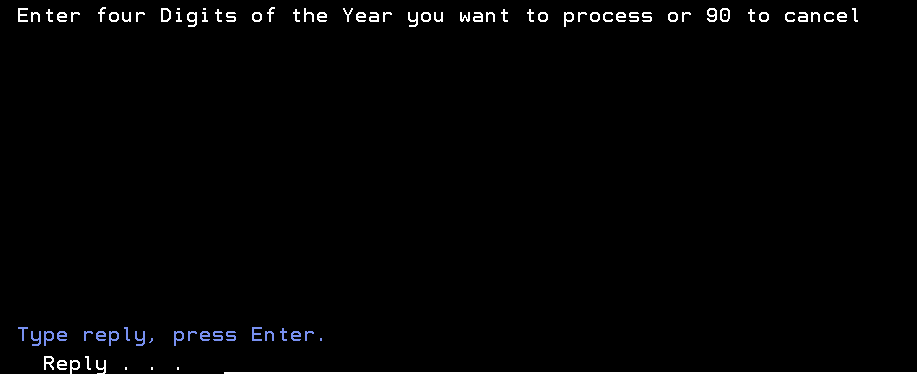
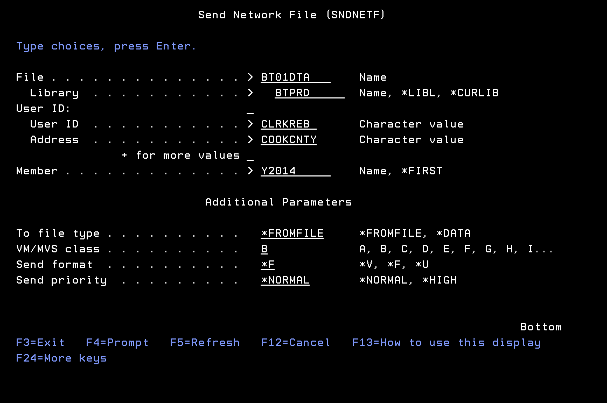
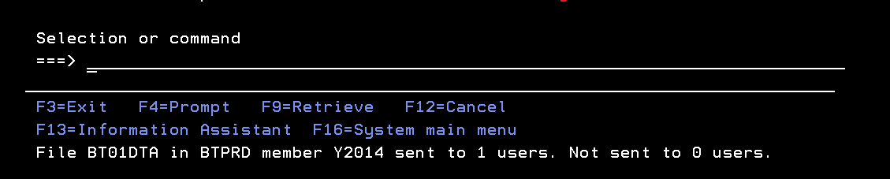
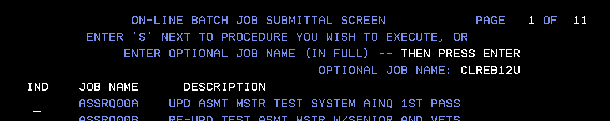

BACKTAX/OMITTED PROCESSING (E1)
· BT07DTA/BTPRD file is created for new year data entry
o Upload timeframe is 1st week in January
· Call ‘BTPRD/BT07CL’

Enter Prior Assessment year (e.g. creating job in 2016, then enter 2015)
· Create new year BT01DTA/BTPRD file
· Contact BOT and make them aware of transmission
· Once given ‘OK’ to send, then run following:


PASSWORD --- MISCJOB

REPORT IS SENT TO WRKOUTQ CARJELIB/QPRINT
· Give report to Felix and request approval
· MIS will then run CLREB12C report (final Backtax upload for 1st installment bill mailing), report will print on WRKOUTQ CARJELIB/QPRINT, print report and give to Felix